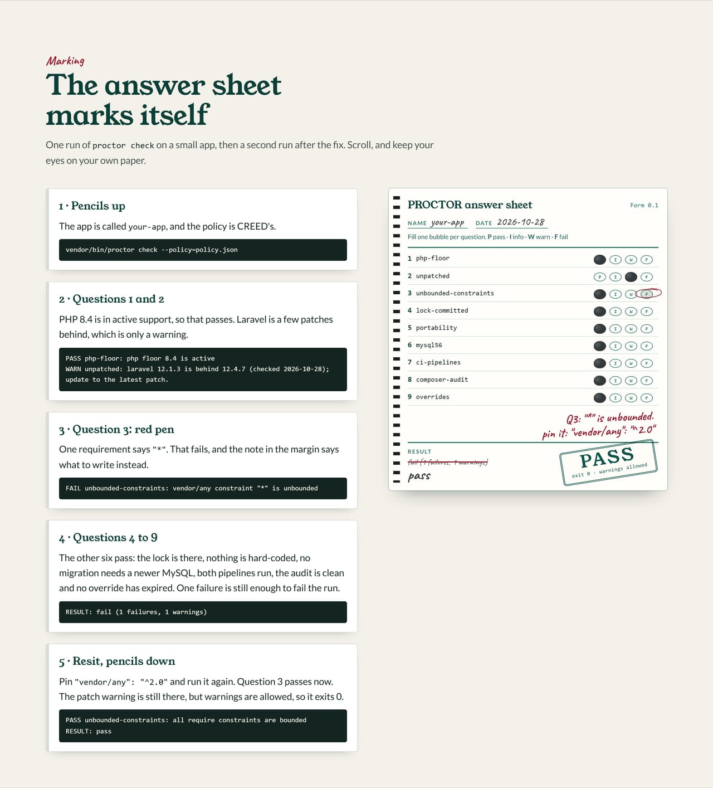

Exit codes#
This page lists the three exit codes proctor check ends with and exactly when each one happens, so a pipeline can branch on the right one. The proctor hands back the mark sheet and leaves the hall; the code is the only word it says out loud. For what feeds the verdict, see Rule ids and the checks overview.
Codes#
| Exit code | Meaning |
|---|---|
0 |
pass (warnings allowed) |
1 |
one or more failures |
2 |
tool error (bad options, unreadable policy, a present but malformed or unreadable composer.json, or an overrides file that is malformed, unreadable, or names a check that is not registered or the overrides check itself) |
A missing composer.json is not a tool error: the app gets a verdict, with php-floor failing.
How a run ends#
%%{init: {'theme':'base','themeVariables':{'fontFamily':'Helvetica, Arial, sans-serif','primaryColor':'#F4F1EA','primaryTextColor':'#1f2a33','primaryBorderColor':'#0C5449','lineColor':'#8A9A94'}}}%%
flowchart LR
run["proctor check"] --> ok{"options and policy readable?"}
ok -- no --> two["exit 2: the proctor tripped"]
ok -- yes --> fails{"any FAIL?"}
fails -- yes --> one["exit 1: resit"]
fails -- no --> zero["exit 0: pass, warnings allowed"]
classDef pass fill:#0C5449,stroke:#0C5449,color:#F4F1EA
classDef fail fill:#9B1C2E,stroke:#9B1C2E,color:#F4F1EA
classDef trip fill:#F4F1EA,stroke:#9B1C2E,color:#9B1C2E,stroke-dasharray:4 3
class zero pass
class one fail
class two trip
Watch it mark a paper#
The answer sheet from the front page, handed over finished:
